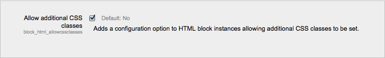
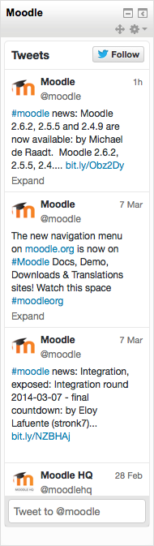

A HTML block is a standard block used to add text, multimedia, widgets etc to a site front page or course page. The title bar may be left blank if desired.
The block is flexible and can incorporate a variety of functions and uses in the content area. It has the standard Moodle Text editor for formatting text, adding images or creating links, switching to code view and allows any valid HTML mark-up to be used. This enables embedding video, sounds, Flash, and other files which can add unique elements to a course or site page.
To aid with styling the block, an administrator can, from Administration > Site administration > Plugins > Blocks > HTML, toggle the ability to allow additional CSS classes to be set in individual block instances. If it is enabled, a field appears at the bottom of HTML block instance’s configuration forms.
Please note that if additional CSS classes have been added and the administration setting is then disabled, the form settings are saved in the database and will reappear if this is re-enabled.
An HTML block can be used to display the latest tweets from any Twitter account.

- Log in to Twitter
- Go to https://twitter.com/settings/widgets/new
- Enter the Twitter username e.g. moodledev then click the ‘Create widget’ button
- In another tab or window add a new HTML block to your Moodle front page or course page
- Configure the new block, adding a title if desired
- Click the ‘Edit HTML source’ button (< >) then copy and paste the code provided by Twitter into the HTML source
- Click the ‘Save changes’ button